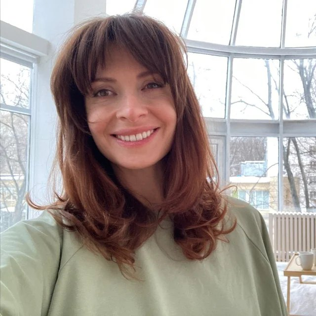
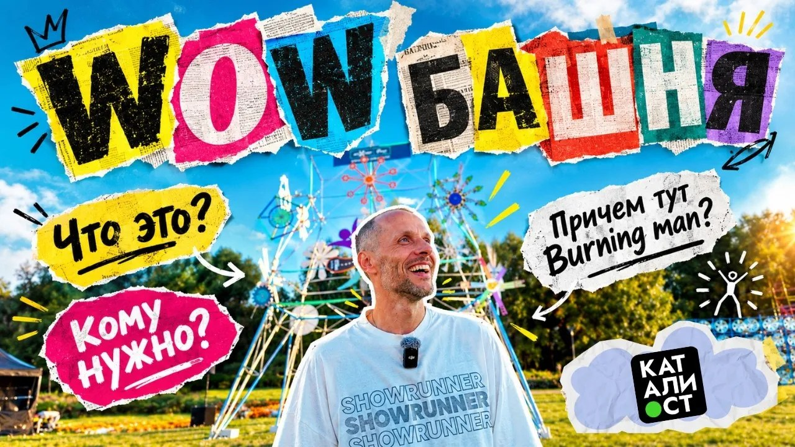
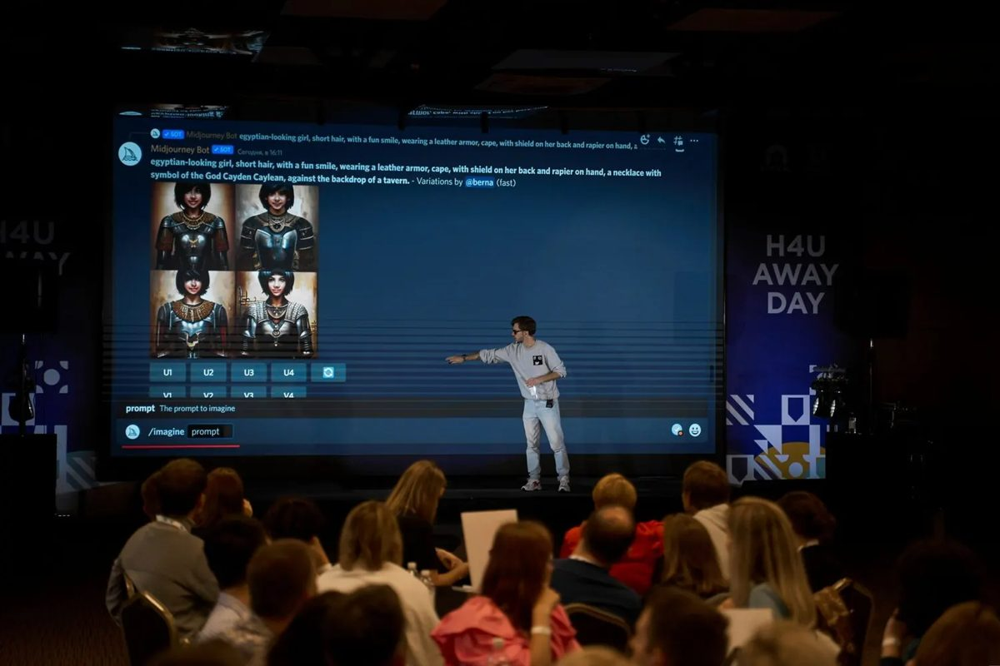
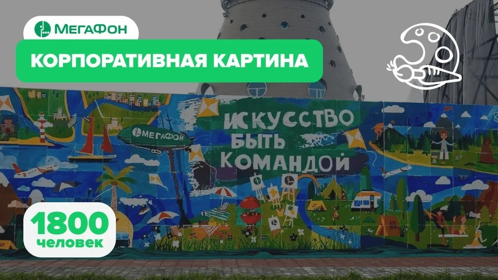
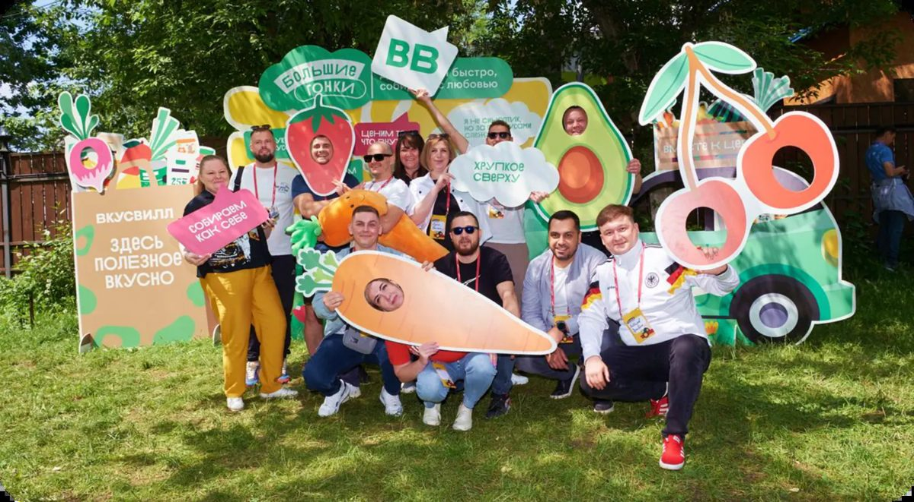
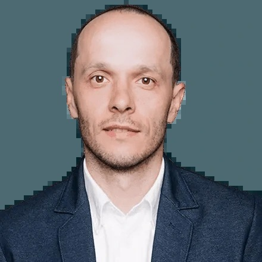
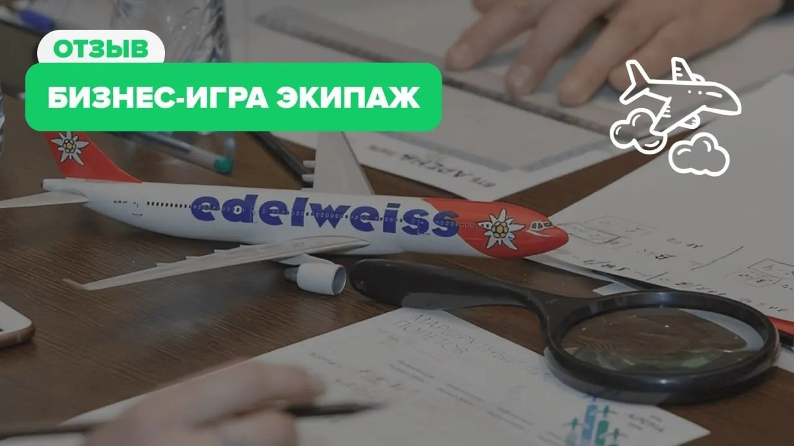
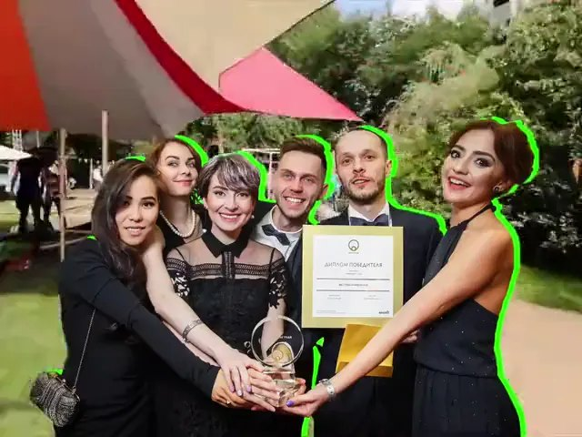

ПРЕВЬЮ, НЕ ОПУБЛИКОВАНО. Тексты для блога Каталиста на Sostav, ждут ОК Маши
Пост 1 · рубрика «Event-маркетинг» · публикация: день 1 после ОК · 2589 знаков с пробелами · ссылок на сайт: 4
Тренды ивент-индустрии 2026: людям надоело смотреть, они хотят делать

Мария Варламова генеральный директор ивент-агентства «Каталист»
«А что дальше?» Этот вопрос заказчики задают нам после удачного тимбилдинга. Праздник прошёл, всем понравилось, а в понедельник всё как раньше. Расскажу, как на это отвечает рынок и что мы видим в своих проектах.

WOW Башня: 160 участников собирают башню размером с трёхэтажный дом. Фото: Каталист
Что говорит мировой рынок
American Express GBT каждый год опрашивает организаторов деловых событий. В прогнозе на 2026 год 601 специалист из восьми стран. Главная задача у них не бюджет и не площадка, а впечатление участника: так ответил каждый третий. 42% хотят больше интерактивных форматов, 40% хотят больше живого общения между участниками.
И ещё одна мысль из отчёта мне близка: успех события всё чаще меряют не деньгами, а тем, что участник унёс с собой. У нас в России картина та же. Слушать доклад с бокалом в руке людям скучно. Им интересно делать что-то самим и вместе.
Нейросети руками, а не на слайде
Лекцию про ИИ через неделю никто не помнит. Поэтому мы встроили нейросети в игру. В бизнес-игре «Стартап с нейросетями» команды за 2,5 часа создают бренд: логотип, рекламу и стратегию. В финале у каждой 3 минуты, чтобы защитить стартап перед инвесторами.
Для туроператора «Пегас» мы провели эту игру в Турции на 1 200 человек. В 2025 году она победила в премии BEMA как лучший командообразующий проект с ИИ.

«Стартап с нейросетями»: работа команд выходит на большой экран. Фото: Каталист
Одна общая вещь на всех
Крупные компании просят формат, где сотни людей делают один объект. Каждая команда отвечает за свой кусок, а в финале куски должны сойтись. Отделы своими глазами видят, как их работа стыкуется с чужой.
Для МегаФона 1 800 участников написали «Корпоративную картину»: каждая команда свой фрагмент, в финале одна картина, и она висит в офисе. В «WOW Башне» 160 человек собрали башню размером с трёхэтажный дом.

«Корпоративная картина» для МегаФона: 1 800 участников. Фото: Каталист
Тимбилдинг, после которого остаётся работа
Команда PepsiCo на стратегической сессии с нашими ведущими придумала с нейросетями концепцию нового продукта. Топ-менеджеры ВкусВилл на тимбилдинге сами собирали сумки для курьеров. Райффайзенбанк попросил придумать игру под свои задачи, так появился «Фестиваль Фудтраков». Он получил премию «Событие года», а вторая часть прошла уже на 300 человек.

Тимбилдинг для ВкусВилл: руководители собирают сумки для курьеров. Фото: Каталист
Мой совет заказчику
Перед тем как выбрать программу, спросите агентство три вещи. Сколько минут участник делает что-то сам, а сколько смотрит на экран. Что останется у компании после события: объект, идеи, видео. И что будет через месяц.
На последний вопрос мы в 2026 году ответили программой «Годовое развитие команды 360»: тимбилдинги, обучение и стратегические сессии по одному плану на год. Проекты из этого текста с фото есть на странице кейсов Каталиста.
Пост 2 · рубрика «Event-маркетинг» · публикация: день 2 после ОК (не раньше чем через 24 часа после первого) · 2553 знаков с пробелами · ссылок на сайт: 4
Как понять, что тимбилдинг сработал: счёт игры и результат компании

Ирек Мансуров исполнительный директор ивент-агентства «Каталист»
В бизнес-игре всегда есть счёт: игровые деньги, оценки инвесторов, долетел ли самолёт. Заказчик видит победителей и радуется. Но счёт игры и результат компании это разные вещи. Рассказываю, как связать одно с другим.
Стратегическая сессия PepsiCo: команды придумывают концепцию продукта с нейросетями. Фото: Каталист
Мой первый вопрос заказчику
Я отвечаю в «Каталисте» за производство программ. Мы проводим бизнес-игры для групп от 50 до 500 человек. Первым делом я спрашиваю: что должно измениться в работе после игры? От ответа зависит, какую игру мы возьмём.
Отделы не договариваются между собой: берём «Мегаполис». Команды строят районы одного города и согласуют их с соседями. В финале город подключают к электросети и зажигают фонари. Людям трудно решать в стрессе: подойдёт «Экипаж». Команды ведут самолёты, информации мало, а столкнуться нельзя.
Видео: «Мегаполис»: как строится город из картона, рассказываю сам. Смотреть на YouTube
Нужно потренировать продажи и переговоры: «Фестиваль Фудтраков». Каждая команда придумывает свой фудтрак, бренд и меню, а потом продаёт еду другим участникам за игровую валюту. Сразу видно, чей продукт купили.
Нужно, чтобы люди умели защищать идеи и не боялись нейросетей: «Стартап с нейросетями». Команды создают бренд в нейросетях и за 3 минуты защищают его перед инвесторами. Лучшие стартапы получают игровые инвестиции.
Что показывает сама игра
Счёт игры честно отвечает, как команда сработала сегодня. Но интереснее другое: игра показывает людей. В «Экипаже» кто-то сам берёт роль капитана, кто-то договаривается с соседями, кто-то держит расчёты.
Мой совет: посадите на игру руководителя или HR наблюдателем, а не участником. Пусть запишет, кто как себя повёл. Это готовый список людей, которых стоит попробовать в новых ролях.

«Экипаж»: участники в роли капитанов самолётов. Фото: Каталист
Что компания меряет сама
Результат в работе может измерить только компания: данные о работе есть только у неё. Я советую три шага. Записать одну цель одним предложением, например «продажи и логистика перестали перекидывать друг другу заявки». Взять показатель, который компания и так считает. И сравнить квартал до игры с кварталом после.
Бывает, что результат виден сразу. Команды PepsiCo на стратегической сессии придумали концепцию нового продукта: итог игры в тот же день стал рабочим материалом.
Когда игра не поможет
Игра тренирует договорённости, роли и решения. Она не исправит зарплаты, перегрузку или планы отделов, которые противоречат друг другу. Если причина там, я честно говорю заказчику: сначала разговор руководителей, тимбилдинг потом.
И ещё: одна игра даёт толчок, но не привычку. Если цель на год, мы собираем программу на год: несколько игр, обучение и сессии по одному плану.

Команда Каталиста с наградами за «Фестиваль Фудтраков» для Райффайзенбанка. Фото: Каталист